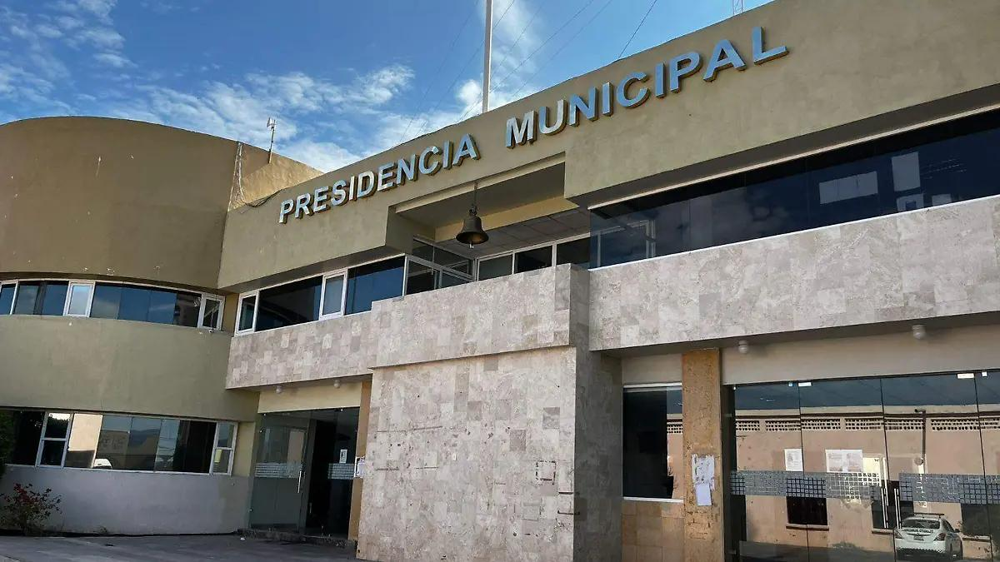

La Presidencia Municipal de Tlacotepec de Benito Juárez se encuentra en la Calle 9 Nte. N° 1, Secc. Primera, Col Centro, 75680 Tlacotepec de Benito Juárez, Puebla, México. Su número de contacto es 237 381 0022. El horario de atención es de lunes a viernes de 9:00 a 17:00 y los sábados de 9:00 a 13:00, cerrando los domingos. La presidencia se dedica a ofrecer diversos servicios a la comunidad, incluyendo trámites administrativos y atención a la ciudadanía.
